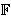

[Prethodna tema]
[Sljedeća tema]
6. Kriptosustavi koji
koriste eliptičke krivulje
6.1.
Menezes-Vanstoneov kriptosustav
Ideju o tome da bi eliptičke krivulje mogle biti korisne
u konstrukciji kriptosustava s javnim ključem prvi su javno
iznijeli Koblitz i
Miller 1985. godine.
Svi kriptosustavi koji je u svojoj originalnoj definiciji
koriste grupu

 *,
kao što je npr. ElGamalov, mogu se vrlo
lako modificirati tako da koriste grupu
E().
No, doslovno prevođenje ElGamalovog kriptosustava u
eliptičke krivulje ima nekoliko nedostataka. Prvi je da
prije šifriranja moramo elemente otvorenog teksta prebaciti
u točke na eliptičkoj krivulji. Za to ne postoji zadovoljavajući
deterministički, već samo vjerojatnosni algoritam, koji koristi
činjenicu da kvadrati u konačnom polju predstavljaju 50% svih
elemenata. Nadalje, šifrat jednog elementa otvorenog teksta
se kod ove varijante
ElGamalovog kriptosustava sastoji od
uređenog para točaka na eliptičkoj krivulji. To znači da
prilikom šifriranja poruka postane otprilike 4 puta duža.
*,
kao što je npr. ElGamalov, mogu se vrlo
lako modificirati tako da koriste grupu
E().
No, doslovno prevođenje ElGamalovog kriptosustava u
eliptičke krivulje ima nekoliko nedostataka. Prvi je da
prije šifriranja moramo elemente otvorenog teksta prebaciti
u točke na eliptičkoj krivulji. Za to ne postoji zadovoljavajući
deterministički, već samo vjerojatnosni algoritam, koji koristi
činjenicu da kvadrati u konačnom polju predstavljaju 50% svih
elemenata. Nadalje, šifrat jednog elementa otvorenog teksta
se kod ove varijante
ElGamalovog kriptosustava sastoji od
uređenog para točaka na eliptičkoj krivulji. To znači da
prilikom šifriranja poruka postane otprilike 4 puta duža.
Navest ćemo jednu varijantu ElGamalovog kriptosustava koja
koristi eliptičke krivulje. Zove se
Menezes -
Vanstoneov
kriptosustav (Menezes-Vanstone ECC).
U njemu se eliptičke krivulje koriste
samo za "maskiranje", dok su otvoreni tekstovi i šifrati
proizvoljni uređeni parovi elemenata iz polja (a ne nužno
parovi koji odgovaraju točkama na eliptičkoj krivulji).
Kod ovog kriptosustava, šifrirana poruka je 2 puta duža od
originalne poruke.
Menezes-Vanstoneov kriptosustav:
Neka je E eliptička krivulja nad
(p > 3 prost),
te H ciklička podgrupa od E generirana s
 .
Neka je .
Neka je  =
* ×
*,
= E ×
* ×
* i =
* ×
*,
= E ×
* ×
* i
 =
{ (E, ,
a, =
{ (E, ,
a,  ) :
=
a }. ) :
=
a }.
Vrijednosti E, ,
i
su javne, a vrijednost a je tajna.
Za K = (E, ,
a, )
 i tajni slučajni
broj k
|H|,
te za x = (x1, x2)
* ×
*
definiramo
i tajni slučajni
broj k
|H|,
te za x = (x1, x2)
* ×
*
definiramo
eK(x, k) =
(y0, y1, y2),
gdje je y0 = [k] ,
(c1, c2) =
[k] ,
y1 = c1x1
mod p,
y2 = c2x2
mod p.
Za šifrat y = (y0, y1, y2) definiramo
dK(y) = (y1(c1)-1 mod p,
y2(c2)-1 mod p),
gdje je [a] y0 = (c1,
c2).
|
Primjer: Neka je E eliptička krivulja nad
13
zadana jednadžbom
y2 = x3 + 4x + 4.
Grupa E(13)
je ciklička grupa reda 15 s generatorom
= (1,3).
Pretpostavimo da Alice želi poslati poruku (x1,
x2) = (12,7) Bobu, čiji je tajni ključ
a = 2, a javni ključ
= a
= [2] (1,3) = (12,8). Pretpostavimo da je Alice izabrala
tajni broj k = 5. Tada ona računa:
(c1,c2) = [k]
= [5] (12,8) =
(10,11),
y0 = [k]
= [5] (1,3) = (10,2),
y1 = c1x1 =
120 = 3 mod 13,
y2 = c2x2 =
77 = 12 mod 13.
Sada Alice šalje Bobu šifrat
(y0,y1,y2)
= ((10,2), 3, 12).
Nakon primitka šifrata Bob računa:
[a] y0 = [2] (10,2) = (10,11) =
(c1,c2),
(3  10-1 mod 13,
12 11-1
mod 13) = (12,7) = (x1,x2).
10-1 mod 13,
12 11-1
mod 13) = (12,7) = (x1,x2).
Zadatci:
- Eliptička krivulja E nad poljem
11 zadana
je jednadžbom
y2 =
x3 + x + 6.
Dokažite da je
= (2,7)
generator grupe E(11).
-
Pomoću Menezes-Vanstoneovog kriptosustava u kojem su
javni ključevi E i iz 1. zadatka, te
= (7,2),
šifrirajte otvoreni tekst (x1,x2)
= (9,1), uz pretpostavku da je jednokratni ključ k = 6.
[Prethodna tema]
[Sljedeća tema]